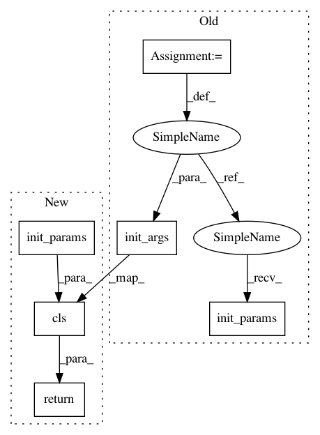

e9b118563c4089f6cd997e79abe3449617acfd7c,qiskit_aqua/algorithms/single_sample/qpe/qpe.py,QPE,init_params,#QPE#Any#Any#,112
Before Change
iqft_params = params.get(QuantumAlgorithm.SECTION_KEY_IQFT)
iqft_params["num_qubits"] = num_ancillae
iqft = get_pluggable_class(PluggableType.IQFT,iqft_params["name"])
iqft = iqft()
iqft.init_params(iqft_params)
self.init_args(
operator, init_state, iqft, num_time_slices, num_ancillae,
paulis_grouping=paulis_grouping, expansion_mode=expansion_mode,
expansion_order=expansion_order)
def init_args(
self, operator, state_in, iqft, num_time_slices, num_ancillae,
paulis_grouping="random", expansion_mode="trotter", expansion_order=1,
After Change
// Set up initial state, we need to add computed num qubits to params
init_state_params = params.get(QuantumAlgorithm.SECTION_KEY_INITIAL_STATE)
init_state_params["num_qubits"] = operator.num_qubits
init_state = get_pluggable_class(PluggableType.INITIAL_STATE,
init_state_params["name"]).init_params(init_state_params)
// Set up iqft, we need to add num qubits to params which is our num_ancillae bits here
iqft_params = params.get(QuantumAlgorithm.SECTION_KEY_IQFT)
iqft_params["num_qubits"] = num_ancillae
iqft = get_pluggable_class(PluggableType.IQFT, iqft_params["name"]).init_params(iqft_params)
return cls(operator, init_state, iqft, num_time_slices, num_ancillae,
paulis_grouping=paulis_grouping, expansion_mode=expansion_mode,
expansion_order=expansion_order)
def _construct_qpe_evolution(self):
Implement the Quantum Phase Estimation algorithm
In pattern: SUPERPATTERN
Frequency: 3
Non-data size: 6
Instances
Project Name: Qiskit/qiskit-aqua
Commit Name: e9b118563c4089f6cd997e79abe3449617acfd7c
Time: 2018-11-20
Author: chenrich@us.ibm.com
File Name: qiskit_aqua/algorithms/single_sample/qpe/qpe.py
Class Name: QPE
Method Name: init_params
Project Name: Qiskit/qiskit-aqua
Commit Name: ef750aa0c262b42247b77361bd1d47806b6dc8ab
Time: 2018-11-20
Author: chenrich@us.ibm.com
File Name: qiskit_aqua/algorithms/adaptive/qaoa/qaoa.py
Class Name: QAOA
Method Name: init_params
Project Name: Qiskit/qiskit-aqua
Commit Name: a295579c3709858015680755fcd63997ccfa0ee7
Time: 2018-11-20
Author: chenrich@us.ibm.com
File Name: qiskit_aqua/algorithms/classical/svm/svm_classical.py
Class Name: SVM_Classical
Method Name: init_params
Project Name: Qiskit/qiskit-aqua
Commit Name: e9b118563c4089f6cd997e79abe3449617acfd7c
Time: 2018-11-20
Author: chenrich@us.ibm.com
File Name: qiskit_aqua/algorithms/single_sample/qpe/qpe.py
Class Name: QPE
Method Name: init_params